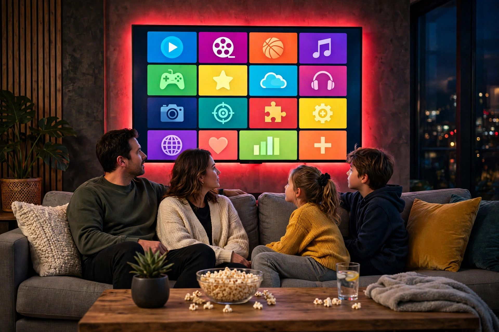

Applications
Les meilleures applications IPTV en 2026
TiviMate, IPTV Smarters, IBO Player et les autres : quelle application choisir selon votre appareil.

Pourquoi l’application compte autant que l’abonnement
Votre abonnement IPTV fournit les chaînes, mais c’est l’application, aussi appelée lecteur, qui les affiche. Elle détermine la rapidité du zapping, la lisibilité du guide des programmes, la gestion des favoris, la qualité de lecture et même la stabilité lors des grands matchs. Un bon abonnement dans une application mal adaptée donne une expérience frustrante ; le même abonnement dans le bon lecteur ressemble à une box opérateur haut de gamme.
Les lecteurs IPTV ne fournissent aucun contenu : ils lisent simplement l’accès que vous leur indiquez, sous forme de connexion Xtream Codes ou de lien M3U. Vous pouvez donc changer d’application à tout moment sans changer d’abonnement. Si ces notions sont nouvelles pour vous, commencez par notre guide qu’est-ce que l’IPTV.
Les critères pour bien choisir
Avant de comparer les applications, posez-vous quelques questions :
- Sur quel appareil ? Toutes les applications n’existent pas partout. TiviMate, par exemple, n’est disponible que sur Android TV et Google TV.
- Pour quel usage ? Surtout du direct et du sport, ou surtout des films et séries ? Un guide des programmes complet compte davantage dans le premier cas.
- Quel niveau de confort ? Certaines applications misent sur la simplicité, d’autres sur les réglages avancés.
- Gratuite ou payante ? Beaucoup proposent une version gratuite et une version Premium. La licence payée revient à l’éditeur de l’application, pas à votre fournisseur IPTV.
- Mise à jour régulière ? Une application maintenue corrige les bugs et suit les évolutions des systèmes.
TiviMate : la référence sur Android TV et Fire TV
TiviMate est souvent considéré comme le meilleur lecteur IPTV pour la télévision. Son interface rappelle celle d’une box opérateur : liste des chaînes sur la gauche, aperçu de la chaîne en cours, guide des programmes en grille très lisible. Le zapping est rapide et la navigation pensée pour la télécommande.
- Points forts : guide des programmes excellent, favoris et groupes personnalisés, replay, enregistrement et rappels en version Premium, gestion de plusieurs playlists.
- Points faibles : uniquement sur Android TV, Google TV et Fire TV ; pas de version pour smartphone ni pour iPhone.
- Pour qui ? Tous ceux qui regardent surtout l’IPTV sur la télé du salon.
Notre guide TiviMate détaille l’installation et tous les réglages utiles.
IPTV Smarters Pro : la plus polyvalente
IPTV Smarters Pro est l’une des applications les plus répandues. Son interface en grandes tuiles sépare clairement le direct, les films, les séries et le replay. Elle existe sur de nombreuses plateformes : Android, Fire TV, certaines Smart TV, Windows, et sur iPhone et iPad sous le nom IPTV Smarters Player Lite.
- Points forts : simple à prendre en main, multiplateforme, connexion Xtream Codes en quelques secondes, bonne gestion des films et séries.
- Points faibles : guide des programmes moins pratique que celui de TiviMate, disponibilité variable selon les boutiques.
- Pour qui ? Les débutants et ceux qui regardent sur plusieurs types d’appareils.
Tous les réglages sont expliqués dans notre guide IPTV Smarters Pro.
Les applications pour Smart TV Samsung et LG
Sur les téléviseurs Samsung (Tizen) et LG (webOS), on ne peut installer que les applications de la boutique officielle. Les lecteurs les plus courants, comme IBO Player, Smart IPTV ou Duplex IPTV, fonctionnent souvent avec une activation par adresse MAC : vous ajoutez votre playlist sur le site de l’éditeur depuis votre téléphone, et elle apparaît sur la télé. La plupart proposent un essai, puis une licence de quelques euros.
Le catalogue change régulièrement, et une application peut disparaître de la boutique. Notre guide installer l’IPTV sur Smart TV explique la marche à suivre pour chaque marque.
Les applications pour iPhone, iPad et Apple TV
L’App Store propose plusieurs lecteurs de qualité : IPTV Smarters Player Lite, GSE Smart IPTV, ou encore iPlayTV, très apprécié sur Apple TV pour son interface proche d’une box. Tous acceptent les connexions Xtream Codes ou M3U. Retrouvez la configuration pas à pas dans notre guide IPTV sur iPhone, iPad et Apple TV.
Les autres options à connaître
- VLC : le lecteur vidéo universel, gratuit, ouvre un lien M3U sur presque tous les appareils. Parfait pour un test rapide, mais sans guide des programmes ni catalogue organisé.
- Kodi : un centre multimédia très personnalisable, qui peut lire l’IPTV grâce à une extension. Puissant, mais plus complexe à configurer.
- Les portails MAG : sur les boîtiers MAG, il n’y a pas d’application à choisir ; l’interface est fournie par le portail. Voir notre guide boîtier MAG.
Notre comparatif
| Application | Appareils | Points forts | Prix |
|---|---|---|---|
| TiviMate | Android TV, Google TV, Fire TV | Guide des programmes, interface type box | Gratuit, Premium payant |
| IPTV Smarters Pro | Android, Fire TV, iOS (Lite), certaines Smart TV | Simplicité, multiplateforme | Gratuit |
| IBO Player, Smart IPTV | Smart TV Samsung et LG | Sans boîtier, activation par MAC | Essai puis licence |
| GSE Smart IPTV, iPlayTV | iPhone, iPad, Apple TV | Intégration Apple | Gratuit ou payant |
| VLC | Tous | Universel, gratuit | Gratuit |
Notre recommandation selon votre appareil
- Télé avec Fire TV Stick ou box Android TV : TiviMate, sans hésiter. Voir nos guides Fire TV et Android.
- Smartphone ou tablette Android : IPTV Smarters Pro.
- iPhone, iPad : IPTV Smarters Player Lite ou GSE Smart IPTV ; Apple TV : iPlayTV.
- Smart TV Samsung ou LG : un lecteur à activation par adresse MAC, ou un Fire TV Stick si vous voulez TiviMate.
Vous ne savez toujours pas quoi choisir ? Pendant votre essai gratuit de 24 heures, testez deux applications et gardez celle qui vous convient le mieux.
Sécurité : où télécharger vos applications
Installez vos lecteurs depuis les boutiques officielles (Google Play, App Store, Amazon Appstore, boutiques Samsung et LG) chaque fois que c’est possible. Lorsqu’une installation manuelle est nécessaire, utilisez uniquement le site de l’éditeur ou le lien fourni par votre service. Évitez les versions « modifiées » trouvées sur des forums : elles peuvent contenir des logiciels malveillants.
Questions fréquentes
Puis-je utiliser plusieurs applications avec le même abonnement ?
Oui. Vous pouvez installer plusieurs lecteurs et y ajouter les mêmes identifiants. Tant que vous regardez sur un seul écran à la fois, tout fonctionne.
Les applications IPTV gratuites sont-elles fiables ?
Les versions gratuites de TiviMate, IPTV Smarters ou VLC sont fiables. Les versions payantes ajoutent du confort, pas de contenu : le contenu vient de votre abonnement.
Quelle est la meilleure application IPTV pour le sport ?
Pour le direct et le sport, TiviMate offre le zapping le plus rapide et le meilleur guide des programmes. Sur iPhone et Smart TV, choisissez un lecteur avec un guide en grille.
Testez Sunday IPTV gratuitement
Essai gratuit de 24 heures, activation rapide et support 24/7 sur WhatsApp.
Demander mon essaiÀ lire aussi

Guide TiviMate : installation et configuration
Ajouter une playlist, régler l’EPG, créer des favoris et profiter des fonctions Premium de TiviMate.

IPTV Smarters Pro : installer et configurer
Connexion Xtream Codes, réglages du lecteur et astuces pour une lecture fluide sur IPTV Smarters Pro.

Installer l’IPTV sur Smart TV Samsung, LG et Android TV
Samsung, LG, Sony, Philips, TCL : le guide complet pour installer une application IPTV sur votre téléviseur, ajouter votre abonnement et régler l’EPG, sans boîtier.